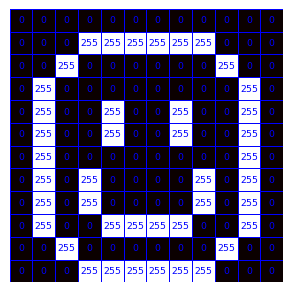
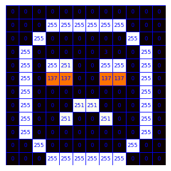
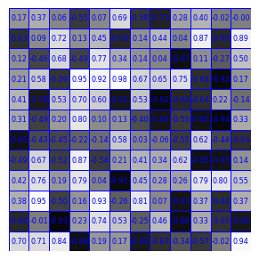
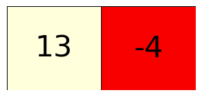
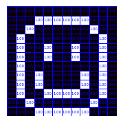
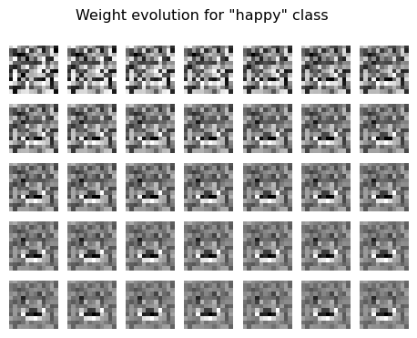
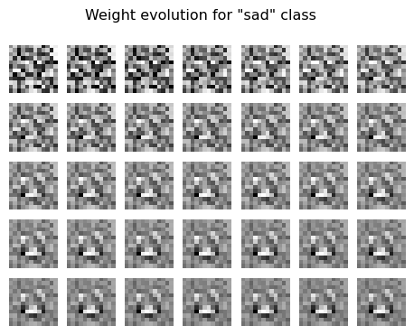
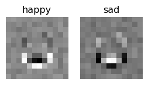
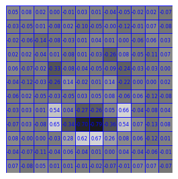
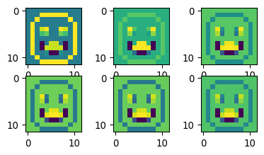

import torch
from torch import nn
from torch.utils.data import Dataset
import numpy as np
import tifffile as tiff
import matplotlib.pyplot as pltWorkshop Python Image Analysis
Martijn Wehrens, September 2025
Estimated time: 20 mins presenting + 60 mins exercises + 20 mins discussion
Chapter 6: A very basic introduction into machine learning
Pytorch required
Code in this notebook might need to be run on Google colab or the like, as laptops might not have the right architecture to run the required pytorch library.
Outline of this mini-workshop
This chapter introduces quite some concepts, and is sometimes a bit concise. It is intended to be combined with questions or discussions with an instructor that is present.
- Mini lecture about Machine Learning
- /Users/m.wehrens/Documents/PRESENTATIONS/TEACHING/ML_verybasic.pptx
- Go over the questions in this notebook
- Don’t try to understand all code!
Exercise: draw 4 images
Open FIJI and create a new 12x12 8bit image. Use the paintbrush tool and color picker to draw four images. Draw 2 images depicting one thing, and two images depicting another thing. E.g. draw 2 images of an apple and two images of a pear. Only spend a few minutes on this. (You can also draw something easier, like numbers, symbols, letters, etc.)
Run some code
The code below uses pytorch to set up a very simple neural network. “Real” neural networks have a much more complicated architecture. The purpose here is to be able to follow along what’s happening in a neural network.
Understanding, but not the technical details
The code has some explanatory comments, but it takes too much time to explain fully how pytorch or similar neural network libraries (like tensorflow or keras) work. You’re welcome to try and understand the code, but don’t get lost in it, the main goal is to understand the concepts of machine learning.
# Technical note: ".to(DEVICE)" tells the computer to run this
# neural network on a specific architecture, which enables
# faster calculations.
#
# Common options:
# CPU: .to("cpu")
# NVIDIA GPU: .to("cuda") or .to("cuda:0")
# Apple GPU via Metal: .to("mps")
# Intel GPU with supported PyTorch build: .to("xpu")
DEVICE = 'mps'# This code defines a VERY simple model for 12x12 pixels,
# meant for illustratory purposes.
class VerySimpleNN(nn.Module):
# Pytorch makes use of classes, which are a way to group
# data and functions together. A class specifies what functions
# the class provides, and what data (like parameters) it stores.
# An object can then be created to actually load data and
# call those functions.
# As an analogy, class definitions are the "blueprint",
# objects instantiated from the class are the "houses".
#
# Here, we define a class (blueprint) for our simple
# neural network.
#
# To learn more about classes, e.g. google for a tutorial on
# Python classes.
def __init__(self):
# __init__ is a standard class method, which is
# automatically called when an object is created.
#
# In this case, it defines how (the layers
# of) the network should look.
# technical; calls init of parent class
super().__init__()
# Define a flatten function, which in this case
# can flatten the input (the image) to a 144 element vector
self.flatten = nn.Flatten()
# Define a linear layer, which will
# calculate weights*pixels for 144 element input and 2 output elements
self.linear = nn.Linear(12*12, 2)
def forward(self, x):
# The forward function can be called later to actually
# generate a prediction.
# It will use the "components" we defined in __init__.
# (This is useful when the network is more complicated,
# and more complex structures or components are defined in __init__, and
# the forward function will be less complex.)
# Now actually use the flatten function to convert
# the 12x12 input to a 1d 144 long vector.
x = self.flatten(x)
# technical note:
# typically, input will be supplied in batches,
# so the input shape will be (batchsize, 12, 12)
# and the output shape will be (batchsize, 144)
# Now use the linear layer to calculate the 2 element output
logits = self.linear(x)
return logits
###
# Now test the neural network
# Instantiate the neural network (create an object from the class)
simpleNN = VerySimpleNN().to(DEVICE)
# Generate a random 12x12 image
test_data = torch.rand(1, 12, 12, device=DEVICE)
print('test_data=',test_data)
# Generate a prediction; calling the object will automatically
# call the forward function (since this is a pytorch class)
# Alternatively, you could also call simpleNN.forward(test_data)
pred = simpleNN(test_data)
pred_numpy = pred.cpu().detach().numpy()
# Print the prediction
print('pred = \"',pred, '\" (pytorch tensor format)')
print('pred_numpy = \"',pred_numpy,'\" (numpy format)')test_data= tensor([[[0.9506, 0.9125, 0.1873, 0.1268, 0.0645, 0.0328, 0.2751, 0.5368,
0.2914, 0.1473, 0.9656, 0.6378],
[0.8672, 0.2213, 0.0238, 0.8710, 0.4699, 0.3237, 0.2101, 0.7540,
0.8327, 0.8837, 0.5797, 0.2530],
[0.0617, 0.5543, 0.6681, 0.0602, 0.4926, 0.0436, 0.5667, 0.5165,
0.6125, 0.9910, 0.0046, 0.2266],
[0.9428, 0.7233, 0.3709, 0.0703, 0.0809, 0.0246, 0.6402, 0.9664,
0.1609, 0.5565, 0.6515, 0.2880],
[0.0785, 0.1244, 0.1492, 0.2815, 0.9407, 0.0150, 0.8680, 0.2771,
0.8586, 0.4942, 0.2428, 0.2007],
[0.6867, 0.4205, 0.8780, 0.4438, 0.2524, 0.3214, 0.5154, 0.4045,
0.4255, 0.0261, 0.8284, 0.4774],
[0.8413, 0.9431, 0.1898, 0.1697, 0.1371, 0.1339, 0.1259, 0.4575,
0.8707, 0.6065, 0.8574, 0.2900],
[0.9298, 0.3531, 0.1153, 0.8650, 0.4950, 0.5645, 0.7808, 0.5539,
0.7059, 0.3720, 0.5749, 0.5255],
[0.5976, 0.4275, 0.5165, 0.1354, 0.5994, 0.5927, 0.8334, 0.0508,
0.1780, 0.2880, 0.6168, 0.9420],
[0.9313, 0.6668, 0.6371, 0.0220, 0.6822, 0.2885, 0.3300, 0.0272,
0.9817, 0.9918, 0.6179, 0.8679],
[0.1387, 0.5950, 0.0748, 0.5739, 0.3327, 0.4674, 0.8184, 0.2349,
0.7708, 0.3962, 0.3263, 0.6651],
[0.7072, 0.8742, 0.3396, 0.6024, 0.1628, 0.9187, 0.3369, 0.2381,
0.4959, 0.7307, 0.5987, 0.6512]]], device='mps:0')
pred = " tensor([[-0.3842, -0.7559]], device='mps:0', grad_fn=<LinearBackward0>) " (pytorch tensor format)
pred_numpy = " [[-0.3842349 -0.7558589]] " (numpy format)Remarks: Tensors
As you can see the output has the type tensor. This is an internal data structure of pytorch, which is similar to a numpy array. The reason we’re using these ‘special’ arrays is (1) that their technical setup allows for calculating the “gradient” (\(\delta\text{loss}/\delta w\)) used to update the weights \(w\) and (2) they can be put on GPUs, which can speed up calculations a lot.
Questions
- What role does \(\delta\text{loss}/\delta w\) play in neural networks?
- This questions regards the code under the heading “# Now test the neural network” above. Can you describe in your own terms what
- The input we give to the network looks like here?
- What the output of the neural network looks like?
- If we were to provide actual images to this network, do you think it would be able to generate meaningful predictions? Why would it (not)?
Concise answers
- \(\delta\text{loss}/\delta w\) is the gradient, which indicates in which direction the weights should be adjusted to reduce the loss.
- This network expects 12x12 images, the input we give here is just random values in the correct shape. The output is an array corresponding to each of the classes, with a respective score that reflects to what extend the input matched that class. In our example [score_happy, score_sad]. Whichever value is the highest, is the predicted class. The output now shows random numbers since the input as well as the weights had random values.
- No, since the weights are not set during a training setting yet.
# Since this network is so simple, we can manually calculate it's outcome
# Now acquire the weights stored in the neural network
# And convert them from tensors to numpy
weights = simpleNN.linear.weight.detach().cpu().numpy()
bias = simpleNN.linear.bias.detach().cpu().numpy()
# bias is a constant term that's added to the weighted sum
# Also convert the test data to numpy
test_data_np = test_data.cpu().numpy().flatten()
# Perform the calculation
output_element1 = np.sum(test_data_np * weights[0]) + bias[0]
output_element2 = np.sum(test_data_np * weights[1]) + bias[1]
print(output_element1, ', ', output_element2)-0.3842349 , -0.7558589Question
- What does the calculation look like that is done inside the neural network, to get from the input elements, to the output elements?
Concise answers
- For each output element, we multiply each input element by its corresponding weight, sum these products together, and then add the bias for that output element.
Exercise: load your images
Adapt the code below to load the images you were asked to draw earlier.
# Let's load some potential input and training data
#
# Here, we'll load only the few images you just created.
#
# In reality, training sets are very large.
# For example, the MNIST dataset has 60,000 training images.
# (https://en.wikipedia.org/wiki/MNIST_database)
# Two image paths
img_happy_path = 'images/ML/smile.tif'
img_sad_path = 'images/ML/sad.tif'
img_sad2_path = 'images/ML/sad2.tif'
# Load images
img_happy = tiff.imread(img_happy_path)
img_sad = tiff.imread(img_sad_path)
img_sad2 = tiff.imread(img_sad2_path)
# Show one image
fig, ax = plt.subplots(1,1, figsize=(3/2.54, 3/2.54))
_=ax.imshow(img_happy)
Seaborn plotting (can be skipped)
# Let's use seaborn to create some more sophisticated plots
import seaborn as sns
def mw_showimg2(img, annotcolor='white',SX=8,SY=8,SF=7,VMIN=0,VMAX=255, CMAP='hot', FMT="d"):
fig, ax = plt.subplots(1,1, figsize=(SX/2.54, SY/2.54))
_ = sns.heatmap(img, annot=True,
fmt=FMT,
cmap=CMAP,
annot_kws={"size": SF, "color": annotcolor},
vmin=VMIN, vmax=VMAX,
linewidths=.5, linecolor=annotcolor,
ax=ax)
ax.axis('off')
ax.collections[0].colorbar.remove()
plt.tight_layout()
# Plot the images
mw_showimg2(img_happy, annotcolor='blue')
mw_showimg2(img_sad2, annotcolor='blue')
# Plot some made-up weights
img_randomweights = np.random.uniform(-1, 1, (12, 12))
mw_showimg2(img_randomweights, annotcolor='blue', SF=6,VMIN=-1,VMAX=1.0, FMT=".2f", CMAP='gray')
# Plot some made-up output
mw_showimg2(np.array([[13,-4]]), annotcolor='black', SY=4, SF=32,VMIN=-14,VMAX=14,CMAP='hot')# gray



Math (can be skipped)
For a prediction y_j, where j is referring to the categories that need predicting (e.g. \(y_1\) high means a “happy” emoji, and a high \(y_2\) value indicates the emoji is likely “sad”), \(y_j\) values can be calculated from the \(i\text{th}\) image pixel \(x_i\) as follows (with \(w_{i,j}\) being the weights):
\(\huge y_j = \sum_{i} w_{i,j} * x_i\)
Defining a data loader
To train a model, pytorch needs to be able to quickly look at a load of data efficiently. In the pytorch workflow, a data class is defined, such that training data can be stored in tensor format, and can be supplied easily to the training algorithm later.
class Data_HappySad(Dataset):
# Again, we use a class, see above for an explanation.
# (Remember the blueprint/house analogy.)
#
# This class is based on the pytorch "Dataset" class, defined
# in the pytorch library. Data_HappySad is the name we
# give to this class. Hence the notation "Data_HappySad(Dataset)".
def __init__(self, targetdevice=DEVICE):
# Technical: tell the class how to store the data (e.g. on CPU or GPU)
self.targetdevice = targetdevice
# Data can be handled in many ways.
# Here, we'll store some data in the object directly.
# This can be done by the "self." command, which refers
# to the to-be-created object itself.
#
# The data needs to be converted to tensor for later use
# We'll use the images loaded earlier, and store 3 images here
self.data = torch.tensor([img_happy, img_sad, img_sad2],
dtype=torch.float32)
# Now, we supply also the true labels that need to be learned
self.label = torch.tensor([0 , 1, 1],
dtype=torch.long)
# Technical: normalize the images
self.data = self.data / 255.0
def __len__(self):
# Function required by pytorch; tells how many samples are in the dataset
return len(self.data)
def __getitem__(self, idx):
# Function required by pytorch; tells how to get a specific item
return self.data[idx].to(self.targetdevice), self.label[idx].to(self.targetdevice)# Show an image from the dataloader
# Create an object from the class
data_happysad = Data_HappySad()
# We can extract a sample and annotation from that class
# (This will later be done automatically in the training loop)
img, label = data_happysad[0]
# For now, let's convert it to the numpy format for illustration
# purposes
img_np = img.cpu().numpy()
# Plot it
mw_showimg2(img_np, annotcolor='blue', VMIN=0, VMAX=1.0, FMT=".2f", SX=5, SY=5, SF=4)/var/folders/8w/2thz_cgn3xn13rhrxb2dvb5w0000gn/T/ipykernel_60091/2723620338.py:21: UserWarning:
Creating a tensor from a list of numpy.ndarrays is extremely slow. Please consider converting the list to a single numpy.ndarray with numpy.array() before converting to a tensor. (Triggered internally at /Users/runner/miniforge3/conda-bld/libtorch_1741947704867/work/torch/csrc/utils/tensor_new.cpp:257.)

Exercise
- Edit the code above, specifically the subfunction
__init__, such that it will load the images you created earlier at the start of this notebook. - Execute the code in the cell directly above, to check if you can make it show your own image.
- This code will show the first image in your dataset, can you also make it show the 2nd and 3rd image?
Concise answers
- To load your own images, replace the
self.dataandself.labelappropriately. - To show different images, change the index in
data_happysad[0]to another number.
Dataloader
We’re now getting close to actually training this model. We’ll need to define a dataloader. In more advanced neural network setups, the DataLoader provides convenient functionalities like shuffling the data, or loading it in parallel from disk. Here, we’ll just use it to be able to loop over the data easily, and provide the data in batches of three images.
We’ll also initialize the model itself (create an object from the class VerySimpleNN defined earlier).
# initialize the dataset and dataloader objects
my_data_happysad = Data_HappySad()
my_data_happysad_loader = torch.utils.data.DataLoader(my_data_happysad,
batch_size=3, shuffle=False)
# initialize the model
my_simple_model = VerySimpleNN().to(DEVICE) # Let's check the data object works as expected
my_data_happysad.__getitem__(0)(tensor([[0., 0., 0., 0., 0., 0., 0., 0., 0., 0., 0., 0.],
[0., 0., 0., 1., 1., 1., 1., 1., 1., 0., 0., 0.],
[0., 0., 1., 0., 0., 0., 0., 0., 0., 1., 0., 0.],
[0., 1., 0., 0., 0., 0., 0., 0., 0., 0., 1., 0.],
[0., 1., 0., 0., 1., 0., 0., 1., 0., 0., 1., 0.],
[0., 1., 0., 0., 1., 0., 0., 1., 0., 0., 1., 0.],
[0., 1., 0., 0., 0., 0., 0., 0., 0., 0., 1., 0.],
[0., 1., 0., 1., 0., 0., 0., 0., 1., 0., 1., 0.],
[0., 1., 0., 1., 0., 0., 0., 0., 1., 0., 1., 0.],
[0., 1., 0., 0., 1., 1., 1., 1., 0., 0., 1., 0.],
[0., 0., 1., 0., 0., 0., 0., 0., 0., 1., 0., 0.],
[0., 0., 0., 1., 1., 1., 1., 1., 1., 0., 0., 0.]], device='mps:0'),
tensor(0, device='mps:0'))Question
- The amount of classes and library functions used at this point might be a bit overwhelming. Can you draw a cartoon that depicts the fundamental aspects of the workflow (or otherwise recreate an overview of it)?
Concise answers
- (..)
The actual training
Now we need to train the model by presenting it a picture, calculating the prediction (which might be completely off initially), determine which weight adjustments would improve the prediction (using the loss function), and update the weights accordingly. And repeat that multiple times.
Training a “real” neural network might take presenting the model with many images, for many iterations, and might take hours or days.
Here, our extremely simple model will be trained swiftly.
# Create the training loop
# Define a loss function
# This function is defined such that it will have a high value
# if there is a large discrepancy between the predicted and true labels.
# Our aim is to minimize the observed loss during the training.
loss_fn = torch.nn.CrossEntropyLoss()
# Later, we'll determine in which directions to adjust the weights
# (called the gradient), that correspond to a reduction in the loss,
# the optimizer will be used to update (optimize) the weights accordingly.
optimizer = torch.optim.Adam(my_simple_model.parameters(), lr=.01)
# technical; set model to training mode
my_simple_model.train()
# For illustratory purposes, we'll track what happens with the
# gradients and weights during the training. In a more extensive
# model, this isn't possible, as this will be too much data.
gradient_list = [] # only for illustratory purposes
weight_list = [] # only for illustratory purposes
loss_list = []
# Now train for 300 iterations (called epochs when 1 iteration covers all data)
for epoch_idx in range(300):
# This loop is a bit redundant here, since we have only 3 images,
# in a usual scenario, e.g. with 60.000 images, you would loop
# over those images in multiple batches. Here, we'll only
# have 1 batch, containing three images, so this loop will
# just iterate once.
for b_idx, (X,y) in enumerate(my_data_happysad_loader):
# X will contain a batch of images
# y will contain the corresponding labels
# For illustrative purposes, we'll track the weights in the model
# This isn't part of a usual training loop.
weights = my_simple_model.linear.weight.detach().cpu().numpy()
weight_list.append(weights)
# Now determine the prediction for X based on current weights
# (Note: the weights are stored inside the model object)
# (Note: the model is programmed such that it will predict
# for multiple images at once.)
pred = my_simple_model(X)
# Now we'll calculate the loss, or the discrepancy between
# the predicted and true labels
loss = loss_fn(pred, y)
# And based on that calculation, we'll determine the gradients
# (ie directions in which to adjust the weights to reduce the loss)
loss.backward()
# For illustrative purposes, we'll track the gradients
# This wouldn't be done in a usual training loop.
gradients = my_simple_model.linear.weight.grad.detach().cpu().numpy()
gradient_list.append(gradients)
# Similarly, also save the loss, this is actually also sometimes
# monitored during "real" training scenarios.
loss_list.append(loss.item())
# Then we use the optimizer to apply the gradients
optimizer.step()
# And we reset them before the next iteration
optimizer.zero_grad()
# Print some information to see what's going on
print('epoch =', epoch_idx, 'batch =',b_idx,', loss = ', loss.item())#, 'X.shape=', X.shape)epoch = 0 batch = 0 , loss = 0.7746336460113525
epoch = 1 batch = 0 , loss = 0.6397852301597595
epoch = 2 batch = 0 , loss = 0.60622638463974
epoch = 3 batch = 0 , loss = 0.5834490060806274
epoch = 4 batch = 0 , loss = 0.5375295281410217
epoch = 5 batch = 0 , loss = 0.48103031516075134
epoch = 6 batch = 0 , loss = 0.4320243299007416
epoch = 7 batch = 0 , loss = 0.3998098373413086
epoch = 8 batch = 0 , loss = 0.37988361716270447
epoch = 9 batch = 0 , loss = 0.3604172170162201
epoch = 10 batch = 0 , loss = 0.3350960314273834
epoch = 11 batch = 0 , loss = 0.3060982823371887
epoch = 12 batch = 0 , loss = 0.2787151634693146
epoch = 13 batch = 0 , loss = 0.25657156109809875
epoch = 14 batch = 0 , loss = 0.24001669883728027
epoch = 15 batch = 0 , loss = 0.22697462141513824
epoch = 16 batch = 0 , loss = 0.21485735476016998
epoch = 17 batch = 0 , loss = 0.20211143791675568
epoch = 18 batch = 0 , loss = 0.18865269422531128
epoch = 19 batch = 0 , loss = 0.1753762811422348
epoch = 20 batch = 0 , loss = 0.163346529006958
epoch = 21 batch = 0 , loss = 0.15317626297473907
epoch = 22 batch = 0 , loss = 0.14481939375400543
epoch = 23 batch = 0 , loss = 0.13774144649505615
epoch = 24 batch = 0 , loss = 0.13127119839191437
epoch = 25 batch = 0 , loss = 0.12491458654403687
epoch = 26 batch = 0 , loss = 0.11849770694971085
epoch = 27 batch = 0 , loss = 0.11212798207998276
epoch = 28 batch = 0 , loss = 0.10605069994926453
epoch = 29 batch = 0 , loss = 0.10049569606781006
epoch = 30 batch = 0 , loss = 0.09557945281267166
epoch = 31 batch = 0 , loss = 0.09128174185752869
epoch = 32 batch = 0 , loss = 0.08748038858175278
epoch = 33 batch = 0 , loss = 0.08401352912187576
epoch = 34 batch = 0 , loss = 0.08073804527521133
epoch = 35 batch = 0 , loss = 0.07756634801626205
epoch = 36 batch = 0 , loss = 0.07447388023138046
epoch = 37 batch = 0 , loss = 0.0714845061302185
epoch = 38 batch = 0 , loss = 0.06864440441131592
epoch = 39 batch = 0 , loss = 0.06599656492471695
epoch = 40 batch = 0 , loss = 0.06356411427259445
epoch = 41 batch = 0 , loss = 0.06134478375315666
epoch = 42 batch = 0 , loss = 0.0593145489692688
epoch = 43 batch = 0 , loss = 0.057437311857938766
epoch = 44 batch = 0 , loss = 0.05567547678947449
epoch = 45 batch = 0 , loss = 0.053998421877622604
epoch = 46 batch = 0 , loss = 0.052386973053216934
epoch = 47 batch = 0 , loss = 0.05083352327346802
epoch = 48 batch = 0 , loss = 0.049339789897203445
epoch = 49 batch = 0 , loss = 0.04791216179728508
epoch = 50 batch = 0 , loss = 0.04655737057328224
epoch = 51 batch = 0 , loss = 0.045279622077941895
epoch = 52 batch = 0 , loss = 0.04407879337668419
epoch = 53 batch = 0 , loss = 0.04295041039586067
epoch = 54 batch = 0 , loss = 0.04188695549964905
epoch = 55 batch = 0 , loss = 0.04087940603494644
epoch = 56 batch = 0 , loss = 0.03991895914077759
epoch = 57 batch = 0 , loss = 0.03899821639060974
epoch = 58 batch = 0 , loss = 0.03811202943325043
epoch = 59 batch = 0 , loss = 0.037257518619298935
epoch = 60 batch = 0 , loss = 0.03643358126282692
epoch = 61 batch = 0 , loss = 0.03564014658331871
epoch = 62 batch = 0 , loss = 0.0348777174949646
epoch = 63 batch = 0 , loss = 0.03414643555879593
epoch = 64 batch = 0 , loss = 0.033445943146944046
epoch = 65 batch = 0 , loss = 0.03277519717812538
epoch = 66 batch = 0 , loss = 0.0321323499083519
epoch = 67 batch = 0 , loss = 0.03151528537273407
epoch = 68 batch = 0 , loss = 0.030921638011932373
epoch = 69 batch = 0 , loss = 0.03034910000860691
epoch = 70 batch = 0 , loss = 0.02979579009115696
epoch = 71 batch = 0 , loss = 0.029260145500302315
epoch = 72 batch = 0 , loss = 0.028741082176566124
epoch = 73 batch = 0 , loss = 0.02823781408369541
epoch = 74 batch = 0 , loss = 0.027749890461564064
epoch = 75 batch = 0 , loss = 0.027276931330561638
epoch = 76 batch = 0 , loss = 0.02681862749159336
epoch = 77 batch = 0 , loss = 0.026374639943242073
epoch = 78 batch = 0 , loss = 0.025944514200091362
epoch = 79 batch = 0 , loss = 0.025527631863951683
epoch = 80 batch = 0 , loss = 0.025123387575149536
epoch = 81 batch = 0 , loss = 0.02473107911646366
epoch = 82 batch = 0 , loss = 0.024349980056285858
epoch = 83 batch = 0 , loss = 0.023979492485523224
epoch = 84 batch = 0 , loss = 0.023618949577212334
epoch = 85 batch = 0 , loss = 0.02326793782413006
epoch = 86 batch = 0 , loss = 0.022925889119505882
epoch = 87 batch = 0 , loss = 0.022592538967728615
epoch = 88 batch = 0 , loss = 0.022267548367381096
epoch = 89 batch = 0 , loss = 0.021950721740722656
epoch = 90 batch = 0 , loss = 0.021641751751303673
epoch = 91 batch = 0 , loss = 0.02134040743112564
epoch = 92 batch = 0 , loss = 0.021046461537480354
epoch = 93 batch = 0 , loss = 0.020759684965014458
epoch = 94 batch = 0 , loss = 0.02047981135547161
epoch = 95 batch = 0 , loss = 0.02020653523504734
epoch = 96 batch = 0 , loss = 0.01993967406451702
epoch = 97 batch = 0 , loss = 0.01967892237007618
epoch = 98 batch = 0 , loss = 0.019424058496952057
epoch = 99 batch = 0 , loss = 0.019174853339791298
epoch = 100 batch = 0 , loss = 0.018931085243821144
epoch = 101 batch = 0 , loss = 0.018692605197429657
epoch = 102 batch = 0 , loss = 0.01845918782055378
epoch = 103 batch = 0 , loss = 0.018230801448225975
epoch = 104 batch = 0 , loss = 0.01800714246928692
epoch = 105 batch = 0 , loss = 0.01778813637793064
epoch = 106 batch = 0 , loss = 0.01757371984422207
epoch = 107 batch = 0 , loss = 0.017363620921969414
epoch = 108 batch = 0 , loss = 0.017157884314656258
epoch = 109 batch = 0 , loss = 0.016956204548478127
epoch = 110 batch = 0 , loss = 0.016758589074015617
epoch = 111 batch = 0 , loss = 0.01656484045088291
epoch = 112 batch = 0 , loss = 0.016374895349144936
epoch = 113 batch = 0 , loss = 0.01618863455951214
epoch = 114 batch = 0 , loss = 0.016005942597985268
epoch = 115 batch = 0 , loss = 0.015826670452952385
epoch = 116 batch = 0 , loss = 0.01565081812441349
epoch = 117 batch = 0 , loss = 0.015478156507015228
epoch = 118 batch = 0 , loss = 0.015308725647628307
epoch = 119 batch = 0 , loss = 0.015142410062253475
epoch = 120 batch = 0 , loss = 0.01497909426689148
epoch = 121 batch = 0 , loss = 0.014818740077316761
epoch = 122 batch = 0 , loss = 0.014661234803497791
epoch = 123 batch = 0 , loss = 0.014506537467241287
epoch = 124 batch = 0 , loss = 0.014354574494063854
epoch = 125 batch = 0 , loss = 0.014205227605998516
epoch = 126 batch = 0 , loss = 0.014058500528335571
epoch = 127 batch = 0 , loss = 0.013914274983108044
epoch = 128 batch = 0 , loss = 0.013772514648735523
epoch = 129 batch = 0 , loss = 0.013633184134960175
epoch = 130 batch = 0 , loss = 0.01349616702646017
epoch = 131 batch = 0 , loss = 0.013361421413719654
epoch = 132 batch = 0 , loss = 0.013228953815996647
epoch = 133 batch = 0 , loss = 0.013098684139549732
epoch = 134 batch = 0 , loss = 0.012970498763024807
epoch = 135 batch = 0 , loss = 0.012844397686421871
epoch = 136 batch = 0 , loss = 0.012720304541289806
epoch = 137 batch = 0 , loss = 0.012598182074725628
epoch = 138 batch = 0 , loss = 0.012478068470954895
epoch = 139 batch = 0 , loss = 0.012359809130430222
epoch = 140 batch = 0 , loss = 0.012243407778441906
epoch = 141 batch = 0 , loss = 0.01212882250547409
epoch = 142 batch = 0 , loss = 0.012015978805720806
epoch = 143 batch = 0 , loss = 0.011904917657375336
epoch = 144 batch = 0 , loss = 0.011795558035373688
epoch = 145 batch = 0 , loss = 0.011687825433909893
epoch = 146 batch = 0 , loss = 0.011581718921661377
epoch = 147 batch = 0 , loss = 0.01147720217704773
epoch = 148 batch = 0 , loss = 0.01137427520006895
epoch = 149 batch = 0 , loss = 0.011272820644080639
epoch = 150 batch = 0 , loss = 0.011172916740179062
epoch = 151 batch = 0 , loss = 0.011074447073042393
epoch = 152 batch = 0 , loss = 0.010977373458445072
epoch = 153 batch = 0 , loss = 0.010881736874580383
epoch = 154 batch = 0 , loss = 0.010787497274577618
epoch = 155 batch = 0 , loss = 0.010694537311792374
epoch = 156 batch = 0 , loss = 0.010602936148643494
epoch = 157 batch = 0 , loss = 0.010512616485357285
epoch = 158 batch = 0 , loss = 0.010423578321933746
epoch = 159 batch = 0 , loss = 0.010335743427276611
epoch = 160 batch = 0 , loss = 0.010249190963804722
epoch = 161 batch = 0 , loss = 0.010163765400648117
epoch = 162 batch = 0 , loss = 0.01007954403758049
epoch = 163 batch = 0 , loss = 0.009996526874601841
epoch = 164 batch = 0 , loss = 0.009914521127939224
epoch = 165 batch = 0 , loss = 0.009833681397140026
epoch = 166 batch = 0 , loss = 0.009753931313753128
epoch = 167 batch = 0 , loss = 0.009675190784037113
epoch = 168 batch = 0 , loss = 0.009597579948604107
epoch = 169 batch = 0 , loss = 0.009520940482616425
epoch = 170 batch = 0 , loss = 0.00944527331739664
epoch = 171 batch = 0 , loss = 0.009370658546686172
epoch = 172 batch = 0 , loss = 0.009296976961195469
epoch = 173 batch = 0 , loss = 0.009224269539117813
epoch = 174 batch = 0 , loss = 0.009152495302259922
epoch = 175 batch = 0 , loss = 0.009081617929041386
epoch = 176 batch = 0 , loss = 0.009011675603687763
epoch = 177 batch = 0 , loss = 0.008942549116909504
epoch = 178 batch = 0 , loss = 0.008874360471963882
epoch = 179 batch = 0 , loss = 0.008806988596916199
epoch = 180 batch = 0 , loss = 0.008740474469959736
epoch = 181 batch = 0 , loss = 0.00867477897554636
epoch = 182 batch = 0 , loss = 0.008609903044998646
epoch = 183 batch = 0 , loss = 0.00854580570012331
epoch = 184 batch = 0 , loss = 0.008482489734888077
epoch = 185 batch = 0 , loss = 0.008419953286647797
epoch = 186 batch = 0 , loss = 0.008358157239854336
epoch = 187 batch = 0 , loss = 0.008297103457152843
epoch = 188 batch = 0 , loss = 0.008236791007220745
epoch = 189 batch = 0 , loss = 0.008177179843187332
epoch = 190 batch = 0 , loss = 0.008118311874568462
epoch = 191 batch = 0 , loss = 0.008060106076300144
epoch = 192 batch = 0 , loss = 0.00800264347344637
epoch = 193 batch = 0 , loss = 0.007945804856717587
epoch = 194 batch = 0 , loss = 0.00788962934166193
epoch = 195 batch = 0 , loss = 0.007834118790924549
epoch = 196 batch = 0 , loss = 0.007779193576425314
epoch = 197 batch = 0 , loss = 0.007724933326244354
epoch = 198 batch = 0 , loss = 0.007671336177736521
epoch = 199 batch = 0 , loss = 0.007618326228111982
epoch = 200 batch = 0 , loss = 0.007565862033516169
epoch = 201 batch = 0 , loss = 0.00751398503780365
epoch = 202 batch = 0 , loss = 0.007462732493877411
epoch = 203 batch = 0 , loss = 0.007412067148834467
epoch = 204 batch = 0 , loss = 0.007361948490142822
epoch = 205 batch = 0 , loss = 0.007312378380447626
epoch = 206 batch = 0 , loss = 0.007263394072651863
epoch = 207 batch = 0 , loss = 0.007214879151433706
epoch = 208 batch = 0 , loss = 0.0071669514290988445
epoch = 209 batch = 0 , loss = 0.007119492162019014
epoch = 210 batch = 0 , loss = 0.007072580512613058
epoch = 211 batch = 0 , loss = 0.007026139181107283
epoch = 212 batch = 0 , loss = 0.006980245467275381
epoch = 213 batch = 0 , loss = 0.00693486025556922
epoch = 214 batch = 0 , loss = 0.006889866199344397
epoch = 215 batch = 0 , loss = 0.006845420226454735
epoch = 216 batch = 0 , loss = 0.006801444571465254
epoch = 217 batch = 0 , loss = 0.006757859140634537
epoch = 218 batch = 0 , loss = 0.006714783608913422
epoch = 219 batch = 0 , loss = 0.006672178860753775
epoch = 220 batch = 0 , loss = 0.006629963871091604
epoch = 221 batch = 0 , loss = 0.006588180083781481
epoch = 222 batch = 0 , loss = 0.006546905729919672
epoch = 223 batch = 0 , loss = 0.006506023928523064
epoch = 224 batch = 0 , loss = 0.006465533282607794
epoch = 225 batch = 0 , loss = 0.006425433326512575
epoch = 226 batch = 0 , loss = 0.006385765969753265
epoch = 227 batch = 0 , loss = 0.0063464888371527195
epoch = 228 batch = 0 , loss = 0.006307605188339949
epoch = 229 batch = 0 , loss = 0.00626915181055665
epoch = 230 batch = 0 , loss = 0.00623101182281971
epoch = 231 batch = 0 , loss = 0.006193343549966812
epoch = 232 batch = 0 , loss = 0.0061559476889669895
epoch = 233 batch = 0 , loss = 0.006118944380432367
epoch = 234 batch = 0 , loss = 0.006082373205572367
epoch = 235 batch = 0 , loss = 0.006046116352081299
epoch = 236 batch = 0 , loss = 0.00601017102599144
epoch = 237 batch = 0 , loss = 0.005974619183689356
epoch = 238 batch = 0 , loss = 0.00593938073143363
epoch = 239 batch = 0 , loss = 0.005904535297304392
epoch = 240 batch = 0 , loss = 0.005869963672012091
epoch = 241 batch = 0 , loss = 0.005835745483636856
epoch = 242 batch = 0 , loss = 0.005801879335194826
epoch = 243 batch = 0 , loss = 0.005768249277025461
epoch = 244 batch = 0 , loss = 0.005734972655773163
epoch = 245 batch = 0 , loss = 0.005702049005776644
epoch = 246 batch = 0 , loss = 0.005669439677149057
epoch = 247 batch = 0 , loss = 0.005637104157358408
epoch = 248 batch = 0 , loss = 0.005605044309049845
epoch = 249 batch = 0 , loss = 0.005573298316448927
epoch = 250 batch = 0 , loss = 0.005541905295103788
epoch = 251 batch = 0 , loss = 0.005510787013918161
epoch = 252 batch = 0 , loss = 0.005479865241795778
epoch = 253 batch = 0 , loss = 0.005449296440929174
epoch = 254 batch = 0 , loss = 0.005419003311544657
epoch = 255 batch = 0 , loss = 0.005388944875448942
epoch = 256 batch = 0 , loss = 0.0053591616451740265
epoch = 257 batch = 0 , loss = 0.005329653155058622
epoch = 258 batch = 0 , loss = 0.005300459917634726
epoch = 259 batch = 0 , loss = 0.005271461326628923
epoch = 260 batch = 0 , loss = 0.005242738872766495
epoch = 261 batch = 0 , loss = 0.005214291159063578
epoch = 262 batch = 0 , loss = 0.005186079069972038
epoch = 263 batch = 0 , loss = 0.005158142652362585
epoch = 264 batch = 0 , loss = 0.005130440928041935
epoch = 265 batch = 0 , loss = 0.005102936178445816
epoch = 266 batch = 0 , loss = 0.005075706634670496
epoch = 267 batch = 0 , loss = 0.0050487518310546875
epoch = 268 batch = 0 , loss = 0.005021954420953989
epoch = 269 batch = 0 , loss = 0.004995392635464668
epoch = 270 batch = 0 , loss = 0.004969106521457434
epoch = 271 batch = 0 , loss = 0.004943016450852156
epoch = 272 batch = 0 , loss = 0.004917201120406389
epoch = 273 batch = 0 , loss = 0.004891544114798307
epoch = 274 batch = 0 , loss = 0.004866122268140316
epoch = 275 batch = 0 , loss = 0.0048408969305455685
epoch = 276 batch = 0 , loss = 0.004815907683223486
epoch = 277 batch = 0 , loss = 0.004791114944964647
epoch = 278 batch = 0 , loss = 0.004766558296978474
epoch = 279 batch = 0 , loss = 0.004742158576846123
epoch = 280 batch = 0 , loss = 0.004718034993857145
epoch = 281 batch = 0 , loss = 0.004694028291851282
epoch = 282 batch = 0 , loss = 0.004670258145779371
epoch = 283 batch = 0 , loss = 0.004646684974431992
epoch = 284 batch = 0 , loss = 0.00462334742769599
epoch = 285 batch = 0 , loss = 0.0046001276932656765
epoch = 286 batch = 0 , loss = 0.004577144514769316
epoch = 287 batch = 0 , loss = 0.004554318264126778
epoch = 288 batch = 0 , loss = 0.00453164940699935
epoch = 289 batch = 0 , loss = 0.0045092166401445866
epoch = 290 batch = 0 , loss = 0.0044869412668049335
epoch = 291 batch = 0 , loss = 0.004464862868189812
epoch = 292 batch = 0 , loss = 0.004442902281880379
epoch = 293 batch = 0 , loss = 0.004421217367053032
epoch = 294 batch = 0 , loss = 0.004399610683321953
epoch = 295 batch = 0 , loss = 0.004378240555524826
epoch = 296 batch = 0 , loss = 0.004357028286904097
epoch = 297 batch = 0 , loss = 0.004335932899266481
epoch = 298 batch = 0 , loss = 0.004315074998885393
epoch = 299 batch = 0 , loss = 0.004294294863939285Questions
- Above you see a training loop, in the printed output below:
- Why is the loss decreasing?
- Optional: google what “learning rate” means. This is set by the
lrparameter. If you like, you can re-initialize the model, adjustlrin the cell above, and see what the effect is. - What would happen to the loss if you’d train for more iterations?
- Would you reckon the training has worked? Will the model now recognize something?
Concise answers
- The loss is decreasing since the training is working: a gradient is calculated that shows in which direction each weight should be adjusted to lower the loss. And indeed, this is done each iteration, such that the loss decreases.
- Regarding learning rate; the gradient only gives the direction in which to adjust the weights (how the weights should be adjusted relative to each other), but not by how much. The learning rate scales to what extend the weights are adjusted. If the learning rate is too high, you might “overshoot” the optimal weights, and end up with a higher loss again. If it’s too low, training will be very slow.
- If you train for more iterations, the loss will likely decrease further.
- For the original examples, the trianing has likely worked, as the loss decreased a load. However, since the model is so simple, and the training data is so limited, it probably won’t be able to recognize anything beyond these specific images.
Loss value over time
# Let's plot the loss value over time
_ = plt.plot(np.array(loss_list).squeeze())
plt.xlabel('Iteration (or epoch)'); plt.ylabel('Loss value')Text(0, 0.5, 'Loss value')
Visualization of what happened
The code below visualizes what happened during model training with the weights. Since this model is so simple, we can interpret the weights.
# visualize the weights
TO_SHOW_NR = 35
fig, axs = plt.subplots(TO_SHOW_NR//7, 7, figsize=(15/2.54, 15/2.54*(TO_SHOW_NR//7)/7))
# show the weights of weight_list[X][0] in a 5 x 7 grid
for weight_iteration in range(TO_SHOW_NR):
pos_X = weight_iteration//7
pos_Y = weight_iteration%7
_ = axs[pos_X,pos_Y].imshow(weight_list[weight_iteration][0].reshape(12,12), cmap='gray')
_ = axs[pos_X,pos_Y].axis('off')
plt.suptitle('Weight evolution for "happy" class')
# now the same for the "sad" class
fig, axs = plt.subplots(TO_SHOW_NR//7, 7, figsize=(15/2.54, 15/2.54*(TO_SHOW_NR//7)/7))
# show the weights of weight_list[X][1] in a 5 x 7 grid
for weight_iteration in range(TO_SHOW_NR):
pos_X = weight_iteration//7
pos_Y = weight_iteration%7
_ = axs[pos_X,pos_Y].imshow(weight_list[weight_iteration][1].reshape(12,12), cmap='gray')
_ = axs[pos_X,pos_Y].axis('off')
plt.suptitle('Weight evolution for "sad" class')Text(0.5, 0.98, 'Weight evolution for "sad" class')

Questions
- Update the code
plt.suptitles above to reflect the categories that match the labels for the images you created yourself. - Right to left, top to bottom, we see how the weights are updated over multiple iterations. Why do you think the weights change the way they do?
- Do you recognize any features in it from your input images?
# show the final weights as images
fig, axs = plt.subplots(1,2, figsize=(8/2.54, 4/2.54))
_=axs[0].imshow(weight_list[-1][0].reshape(12,12),cmap='gray')
_=axs[1].imshow(weight_list[-1][1].reshape(12,12),cmap='gray')
_=axs[0].set_title('happy')
_=axs[1].set_title('sad')
_=axs[0].axis('off')
_=axs[1].axis('off')
Questions
- Update the labels above according with your own data.
- How do you think this model would perform on a validation data set (as opposed to a training set)?
- Do you think overfitting is a problem for this model?
- In a more complex network architecture, do you think it will be possible to interpret weights in the same way as we did here?
Concise answers
- (..)
- This model will likely perform very poorly on a validation set, since it is overfitted on the few training images it saw. To detect generalized patterns, a more complex model and more training data would be needed.
- So yes, overfitting is a problem. One can test for overfitting by carefully checking performance on a validation set (pictures the model hasn’t seen yet), which should be good if the model is not overfitted.
- In a more complex network architecture, it will likely not be possible to interpret the weights in the same way as we did here, since there are many more parameters, and they interact in a more complex way. There are ways to try to interpret the results of complex models, but this is wholly outside our scope, and it is not always possible to fully understand how a complex model makes its decisions.
Proof of the pudding: did it work?
Let’s feed the original input images to the model again, and look at the predictions. (In a real scenario, you’d hope the model will also be able to classify unseen data, with our limited training data and limited model, that’s not something we can expect.)
# apply the model to image 1
X1 = my_data_happysad.__getitem__(0)[0].unsqueeze(0)
pred = my_simple_model(X1)
print('X1=', pred)
# and to image 2
X2 = my_data_happysad.__getitem__(1)[0].unsqueeze(0)
pred = my_simple_model(X2)
print('X2=', pred)
# and to image 3
X3 = my_data_happysad.__getitem__(2)[0].unsqueeze(0)
pred = my_simple_model(X3)
print('X3=', pred)X1= tensor([[ 2.7671, -2.2946]], device='mps:0', grad_fn=<LinearBackward0>)
X2= tensor([[-2.4027, 2.7465]], device='mps:0', grad_fn=<LinearBackward0>)
X3= tensor([[-3.6230, 3.6140]], device='mps:0', grad_fn=<LinearBackward0>)Questions
- Are the predictions correct?
- Try drawing a new image in one of your classes, and let the model predict the class. What do you see?
Concise answers
- If the location in the array corresponding to the actual class has the highest value, then the prediction is correct.
- If your old and new images have specific pixels that consistently show different values per class, it might be that the class gets predicted correctly, as this simple model will pick up on those. But as mentioned throughout earlier answers, this model is very simple, and the training data is very limited, so it won’t be able to generalize well to new images.
Biological images
- Say you have biological data from multiple conditions and multiple biological replicates. How would you divide this data among the training and validation sets?
- Let’s say you use an existing machine learning model (e.g. micro-sam) to segment your data. Do you think you can manually check the segmentation went OK by investigating the original input images and segmentation result?
- Now, let’s say you use a machine learning model to quantify a specific phenotype (say ‘leaf health’ trained on human scoring of leafs) that you expect to change for your conditions.
- Is it now equally easy as the previous question to check whether the score correctly reflects leaf health?
- If you use a more complex machine learning model, is it possible to understand how the scoring was determined, or which features the model used to make its decision? What challenges might arise in interpreting the results?
- Is the interpretability equally important for segmentation and for phenotyping?
- What are your thoughts on applying ML in this way?
- Say the images used to train the leaf damage also included (in the picture) several groups of insects that contribute to the damage in various degree respectively. Do you see any issue with this training data set?
- How could overfitting impact the performance of your model when applied to new biological images?
- How might differences in image acquisition (e.g. microscope settings, lighting) influence the results of your analysis?
- How can you assess whether your model is generalizing well to unseen data, rather than just memorizing the training set?
Concise answers
My thoughts:
- Ideally, both the training and validation class reflect the same distribution of data, so you would want to have a mix of conditions and biological replicates in both sets. You could for example randomly assign 80% of the data to the training set, and 20% to the validation set, while ensuring that all conditions and replicates are represented in both sets.
- Generally, it’s easy to see by eye, even in new images, whether segmentation corresponds to the intended result. Manually drawing segmentations is likely much more work than quickly checking whether the segmentation is correct.
- Phenotype learning:
- It’s not as easy to check whether the score correctly reflects leaf health, since this is a more abstract concept than segmentation. Manually checking all output will likely be difficult, as this is almost as laborious as checking predicted scores.
- It will be very hard to understand how the model determined its score, in case you have used a more complex model. The model is a “black box”.
- Segmentation usually either has worked or not. How something is recognized is usually not key to understanding your biological question (depending on your topic). On the other hand, understanding the phenotype, and its nuances, is probably much more related to your biological question.
- I would try to avoid “black box” approaches as solution to biological questions.
Congratulations!
You have reached the end of the machine learning part of this workshop! Let us know if you have any questions, comments or discussion points.
img_party=tiff.imread('images/emoji/party.tif')
fig, axs = plt.subplots(1,4, figsize=(12/2.54, 3/2.54))
for ch in range(3):
_=axs.flatten()[ch].imshow(img_party[:,:,ch])
_=axs.flatten()[3].imshow(img_party)
More code for other purposes (can be skipped)
# Final weights in different style
print(np.min(weight_list[-1][0]), np.max(weight_list[-1][0]))
mw_showimg2(weight_list[-1][0].reshape((12,12)),
annotcolor='blue', VMIN=-1, VMAX=1.0, FMT=".2f", CMAP='gray', SF=6)-0.79394925 0.6660891
# show the first and second gradients
fig, axs = plt.subplots(2,3, figsize=(12/2.54, 6/2.54))
_=axs[0,0].imshow(gradient_list[0][0].reshape(12,12))
_=axs[0,1].imshow(gradient_list[1][0].reshape(12,12))
_=axs[0,2].imshow(gradient_list[2][0].reshape(12,12))
_=axs[1,0].imshow(gradient_list[3][0].reshape(12,12))
_=axs[1,1].imshow(gradient_list[4][0].reshape(12,12))
_=axs[1,2].imshow(gradient_list[5][0].reshape(12,12))
print(len(gradient_list))
gradient_list[0].shape
gradient_list[4][0].reshape((12,12)).shape300(12, 12)# Doesn't seem to work ??
# from torchsummary import summary
# summary(my_simple_model, input_size=(12,12))# There should be 12x12 + 1 + 12x12 + 1 = 290 model parameters
sum(p.numel() for p in my_simple_model.parameters() if p.requires_grad)290